Clic para regresar al menu de canchas
Descripcion de las canchas
Clic para ir a la cancha de State Farm Arena
Clic para ir a la cancha de TD Garden
Clic para ir a la cancha de Barclays Centerr
Clic para ir a la cancha de Spectrum Cente
Clic para ir a la cancha de United Center
Clic para ir a la cancha de Rocket Mortgage FieldHouse
Clic para ir a la cancha de American Airlines Center
Clic para ir a la cancha de Ball Arena
Clic para ir a la cancha de Little Caesars Arena
Clic para ir a la cancha de Chase Cente
Clic para ir a la cancha de Toyota Center
Clic para ir a la cancha de Bankers Life Fieldhouse
Clic para ir a la cancha de Crypto.com Arena
Clic para ir a la cancha de FedExForum
Clic para ir a la cancha de FTX Arena
Clic para ir a la cancha de Fiserv Forum
Clic para ir a la cancha de Target Center
Clic para ir a la cancha de Smoothie King Centera
Clic para ir a la cancha de State Farm Arena
Clic para ir a la cancha de Paycom Cente
State Farm Arena
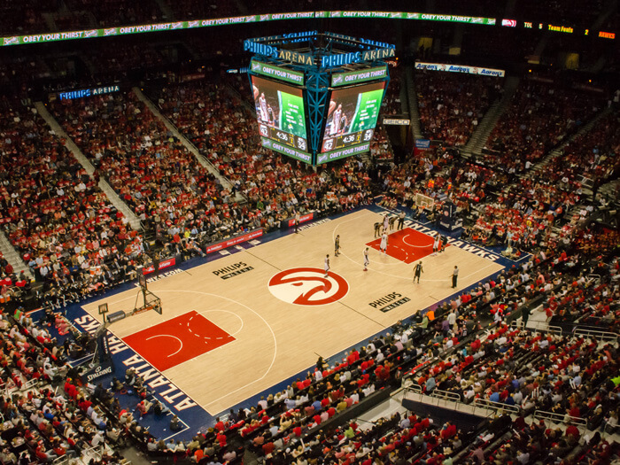
Dirección: 1 Philips Drive, Atlanta (Georgia) 30303
Capacidad (baloncesto): 16.600 espectadores
Inauguración: sábado, 18 de septiembre de 1999
Anterior cancha del equipo: Omni Coliseum
Arquitecto: Populous/Arquitectonica
Coste de construcción: 213 millones de dólares (En fecha de construcción. No incluye renovaciones)
Propiedad: Pública
Propietario: Atlanta-Fulton County Recreation Authority
Gestor: Atlanta Hawks
Página web oficial: https://www.statefarmarena.com/
TD Garden
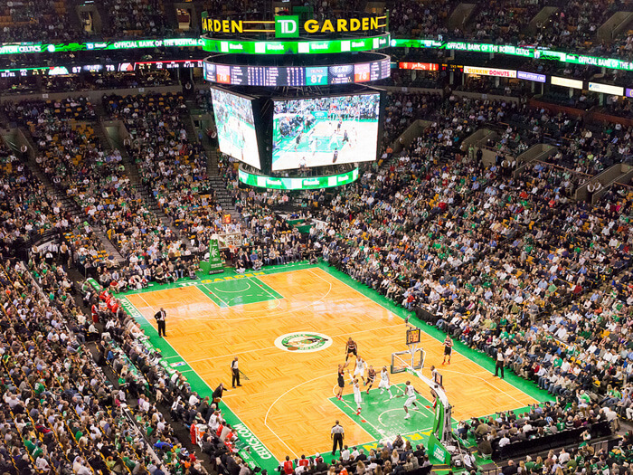
Dirección: 100 Legends Way Boston, Boston (Massachusetts) 02114
Capacidad (baloncesto): 18.624 espectadores
Inauguración: sábado, 30 de septiembre de 1995
Anterior cancha del equipo: Boston Garden
Arquitecto: Ellerbe Becket, Inc.
Coste de construcción: 160 millones de dólares (En fecha de construcción. No incluye renovaciones)
Propiedad: Privada
Propietario: Delaware North
Gestor: Delaware North
Otros equipos de los que es sede: Boston Bruins (NHL)
Página web oficial: https://www.tdgarden.com/
Barclays Centerr
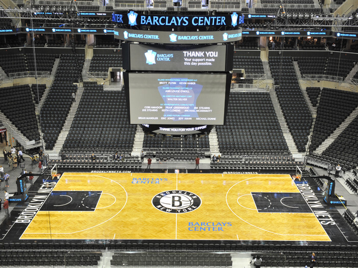
Dirección: 620 Atlantic Avenue, Nueva York (Nueva York) 11217
Capacidad (baloncesto): 17.732 espectadores
Inauguración: viernes, 21 de septiembre de 2012
Anterior cancha del equipo: Prudential Center
Arquitecto: AECOM (Ellerbe Becket)
Coste de construcción: 1000 millones de dólares (En fecha de construcción. No incluye renovaciones)
Propiedad: Pública
Propietario: Empire State Development
Gestor: BSE Global
Otros equipos de los que es sede: LIU Sharks (NCAA), New York Liberty (WNBA)
Página web oficial: https://www.barclayscenter.com/
Spectrum Cente
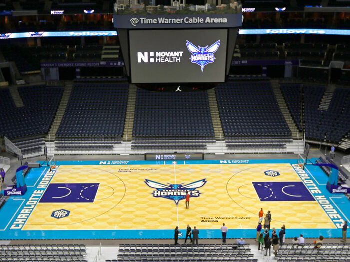
Dirección: 333 East Trade Street, Charlotte (Carolina del Norte) 28202
Capacidad (baloncesto): 19.077 espectadores
Inauguración: viernes, 21 de octubre de 2005
Anterior cancha del equipo: Charlotte Coliseum
Arquitecto: Ellerbe Becket, Inc.
Coste de construcción: 260 millones de dólares (En fecha de construcción. No incluye renovaciones)
Propiedad: Pública
Propietario: City of Charlotte
Gestor: Hornets Sports & Entertainment
Página web oficial: https://www.timewarnercablearena.com/timewarner/
United Center
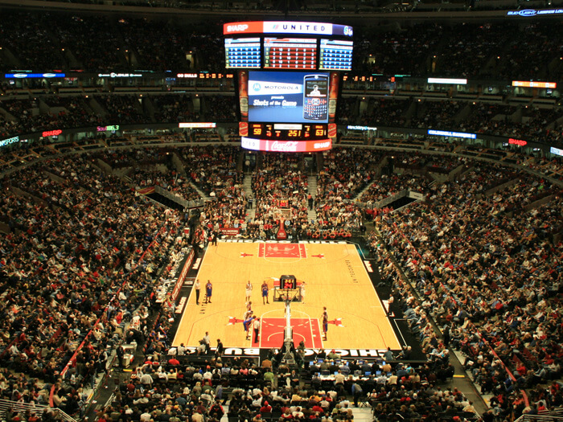
Dirección: 1901 West Madison Street, Chicago (Illinois) 60612
Capacidad (baloncesto): 20.917 espectadores
Inauguración: jueves, 18 de agosto de 1994
Anterior cancha del equipo: Chicago Stadium
Arquitecto: Populous
Coste de construcción: 175 millones de dólares (En fecha de construcción. No incluye renovaciones)
Propiedad: Privada
Propietario: United Center Joint Venture
Gestor: United Center Joint Venture
Otros equipos de los que es sede: Chicago Blackhawks (NHL)
Página web oficial: https://www.unitedcenter.com/
Rocket Mortgage FieldHouse
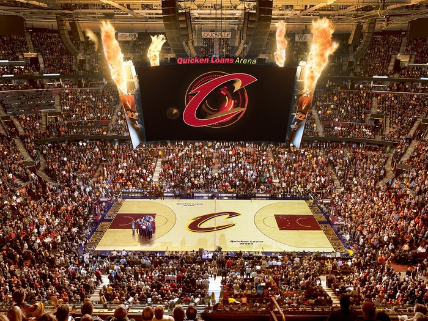
Dirección: 1 Center Court, Cleveland (Ohio) 44115
Capacidad (baloncesto): 19.432 espectadores
Inauguración: lunes, 17 de octubre de 1994
Anterior cancha del equipo: Cleveland Arena
Arquitecto: Ellerbe Becket, Inc.
Coste de construcción: 100 millones de dólares (En fecha de construcción. No incluye renovaciones)
Propiedad: Pública
Propietario: Gateway Economic Development Corp.
Gestor: Rocket Mortgage FieldHouse
Otros equipos de los que es sede: Clevelad Monsters (AHL)
Página web oficial: https://www.rocketmortgagefieldhouse.com/
American Airlines Center
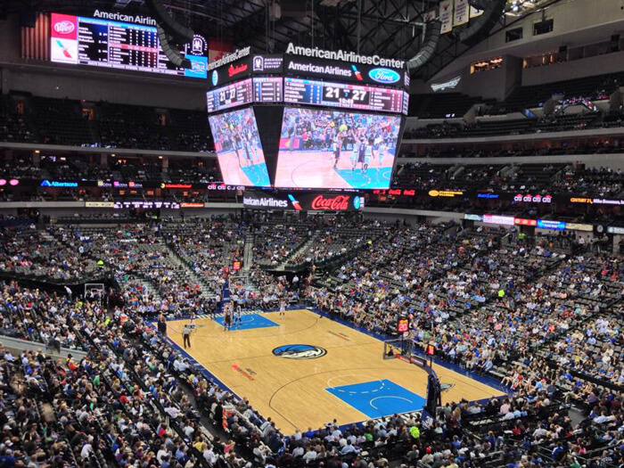
Dirección: 2500 Victory Avenue, Dallas (Texas) 75219
Capacidad (baloncesto): 19.200 espectadores
Inauguración: martes, 17 de julio de 2001
Anterior cancha del equipo: Reunion Arena
Arquitecto: David M. Schwarz/HKS, Inc.
Coste de construcción: 420 millones de dólares (En fecha de construcción. No incluye renovaciones)
Propiedad: Pública
Propietario: City of Dallas
Gestor: Center Operating Company, L.P.
Otros equipos de los que es sede: Dallas Stars (NHL)
Página web oficial: https://www.americanairlinescenter.com/
Ball Arena
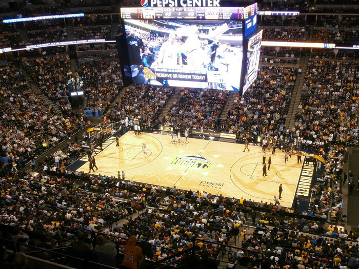
Dirección: 1000 Chopper Circle, Denver (Colorado) 80204
Capacidad (baloncesto): 19.520 espectadores
Inauguración: viernes, 1 de octubre de 1999
Anterior cancha del equipo: McNichols Sports Arena
Arquitecto: Populous
Coste de construcción: 187 millones de dólares (En fecha de construcción. No incluye renovaciones)
Propiedad: Privada
Propietario: Kroenke Sports & Enterprises
Gestor: Kroenke Sports & Enterprises
Otros equipos de los que es sede: Colorado Avalanche (NHL), Colorado Mammoth (NLL)
Página web oficial: https://www.ballarena.com/
Little Caesars Arena
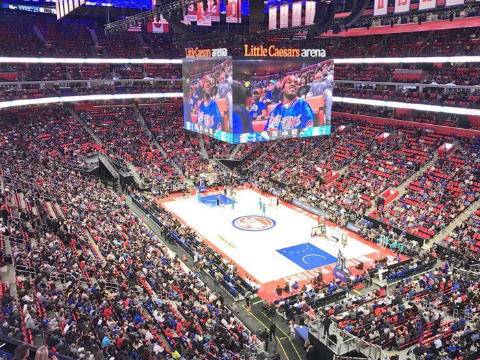
Dirección: 2645 Woodward Avenue, Detroit (Michigan) 48201
Capacidad (baloncesto): 20.332 espectadores
Inauguración: martes, 5 de septiembre de 2017
Anterior cancha del equipo: The Palace of Auburn Hills
Arquitecto: HOK
Coste de construcción: 863 millones de dólares (En fecha de construcción. No incluye renovaciones)
Propiedad: Pública
Propietario: Downtown Development Authority
Gestor: Olympia Entertainment / 313 Presents
Otros equipos de los que es sede: Detroit Red Wings (NHL)
Página web oficial: https://goo.gl/F3F5EJ
Chase Center
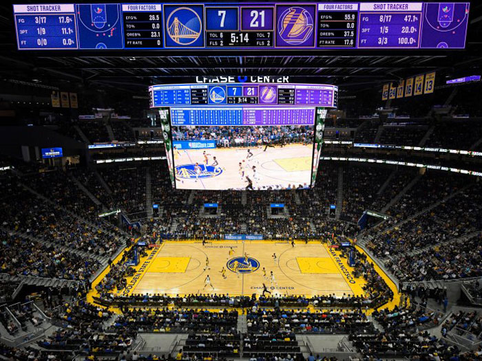
Dirección: 1 Warriors Way, San Francisco (California) 94158
Capacidad (baloncesto): 18.064 espectadores
Inauguración: viernes, 6 de septiembre de 2019
Anterior cancha del equipo: Oracle Arena
Arquitecto: MANICA Architecture
Coste de construcción: 1400 millones de dólares (En fecha de construcción. No incluye renovaciones)
Propiedad: Privada
Propietario: Golden State Warriors
Gestor: Golden State Warriors
Página web oficial: https://www.chasecenter.com
Toyota Center
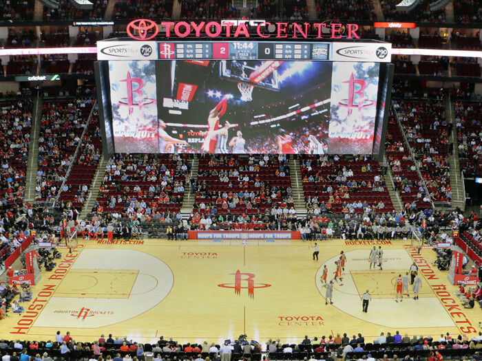
Dirección: 1510 Polk Street, Houston (Texas) 77002
Capacidad (baloncesto): 18.055 espectadores
Inauguración: lunes, 6 de octubre de 2003
Anterior cancha del equipo: The Summit
Arquitecto: Populous
Coste de construcción: 235 millones de dólares (En fecha de construcción. No incluye renovaciones)
Propiedad: Pública
Propietario: Harris County-Houston Sports Authority
Gestor: Clutch City Sports and Entertainment
Página web oficial: https://www.houstontoyotacenter.com/
Bankers Life Fieldhouse<
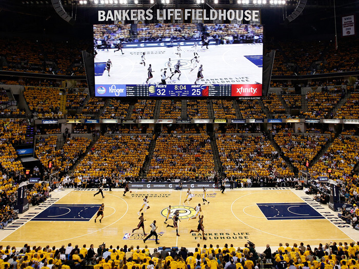
Dirección: 125 South Pennsylvania Street, Indianápolis (Indiana) 46204
Capacidad (baloncesto): 17.923 espectadores
Inauguración: sábado, 6 de noviembre de 1999
Anterior cancha del equipo: Market Square Arena
Arquitecto: Ellerbe Becket, Inc.
Coste de construcción: 183 millones de dólares (En fecha de construcción. No incluye renovaciones)
Propiedad: Pública
Propietario: CIB (City of Indianapolis)
Gestor: CIBM (Marion County)
Página web oficial: https://www.bankerslifefieldhouse.com/
Crypto.com Arena
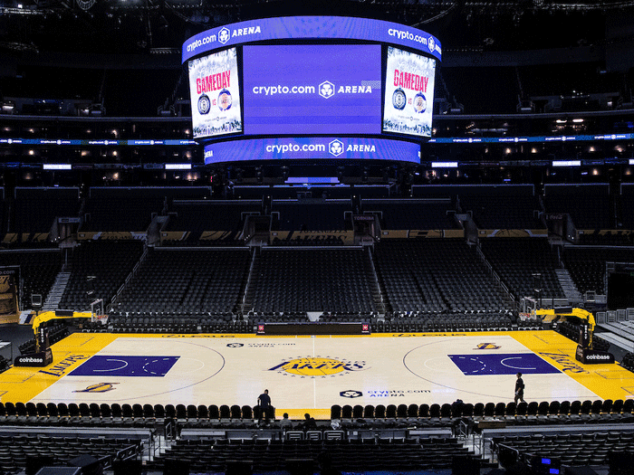
Dirección: 1111 South Figueroa Street, Los Ángeles (California) 90015
Capacidad (baloncesto): 19.060 espectadores
Inauguración: domingo, 17 de octubre de 1999
Anterior cancha del equipo: The Forum, Los Angeles Memorial Sports Arena
Arquitecto: NBBJ
Coste de construcción: 375 millones de dólares (En fecha de construcción. No incluye renovaciones)
Propiedad: Privada
Propietario: AEG
Gestor: AEG
Otros equipos de los que es sede: Los Angeles Kings (NHL), Los Angeles Sparks (WNBA)
Página web oficial: https://www.cryptoarena.com/
FedExForum
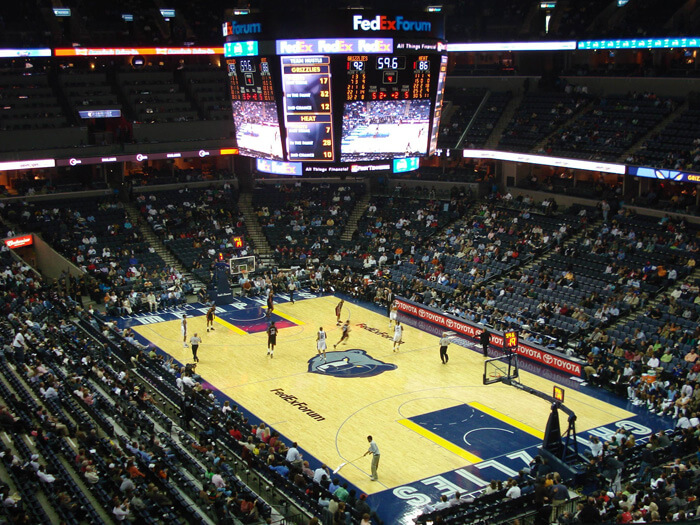
Dirección: 191 Beale Street, Memphis (Tennessee) 38103
Capacidad (baloncesto): 18.119 espectadores
Inauguración: lunes, 6 de septiembre de 2004
Anterior cancha del equipo: Pyramid Arena
Arquitecto: Ellerbe Becket, Inc.
Coste de construcción: 250 millones de dólares (En fecha de construcción. No incluye renovaciones)
Propiedad: Pública
Propietario: City of Memphis
Gestor: Memphis Basketball, LLC
Otros equipos de los que es sede: Memphis Tigers (NCAA)
Página web oficial: https://www.fedexforum.com/
FTX Arena
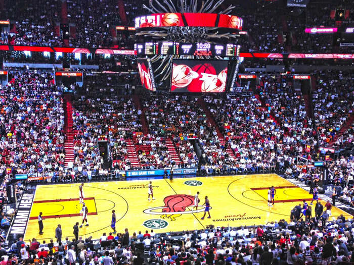
Dirección: 601 Biscayne Boulevard, Miami (Florida) 33132
Capacidad (baloncesto): 19.600 espectadores
Inauguración: viernes, 31 de diciembre de 1999
Anterior cancha del equipo: Miami Arena
Arquitecto: Arquitectonica/360 Architecture
Coste de construcción: 213 millones de dólares (En fecha de construcción. No incluye renovaciones)
Propiedad: Pública
Propietario: Miami-Dade County
Gestor: Basketball Properties Ltd.
Página web oficial: https://www.ftxarena.com
Fiserv Forum<
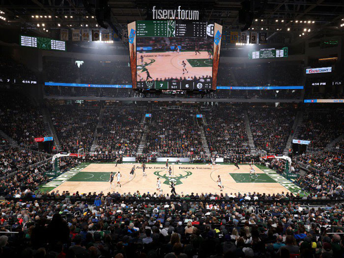
Dirección: 1111 Vel R. Phillips Avenue, Milwaukee (Wisconsin) 53203
Capacidad (baloncesto): 17.341 espectadores
Inauguración: domingo, 26 de agosto de 2018
Anterior cancha del equipo: Bradley Center
Arquitecto: Populous/HNTB/Eppstein Uhen Architects
Coste de construcción: 524 millones de dólares (En fecha de construcción. No incluye renovaciones)
Propiedad: Pública
Propietario: Wisconsin Center District
Gestor: Milwaukee Bucks
Otros equipos de los que es sede: Marquette Golden Eagles (NCAA)
Página web oficial: https://www.fiservforum.com/
Target Center
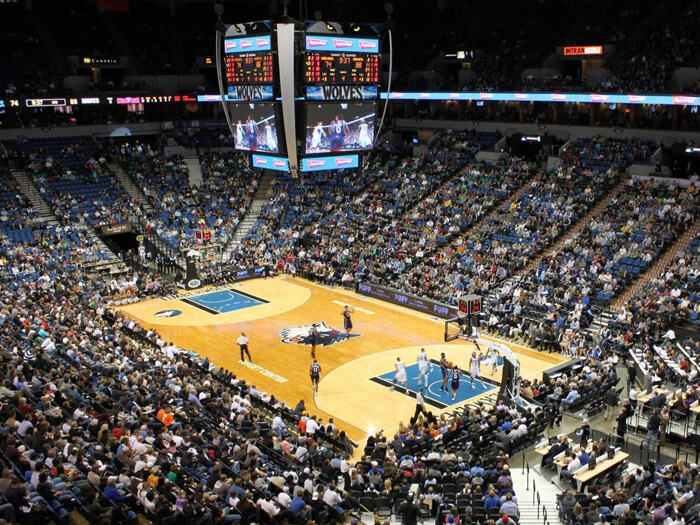
Dirección: 600 North First Avenue, Mineápolis (Minnesota) 55403
Capacidad (baloncesto): 18.798 espectadores
Inauguración: sábado, 13 de octubre de 1990
Anterior cancha del equipo: Hubert H. Humphrey Metrodome
Arquitecto: KMR Architects, Ltd.
Coste de construcción: 104 millones de dólares (En fecha de construcción. No incluye renovaciones)
Propiedad: Pública
Propietario: City of Minneapolis
Gestor: AEG
Otros equipos de los que es sede: Minnesota Lynx (WNBA)
Página web oficial: https://www.targetcenter.com/
Smoothie King Center

Dirección: 1501 Dave Dixon Drive, Nueva Orleans (Luisiana) 70113
Capacidad (baloncesto): 16.867 espectadores
Inauguración: viernes, 29 de octubre de 1999
Arquitecto: Arthur Q. Davis and Partners
Coste de construcción: 112 millones de dólares (En fecha de construcción. No incluye renovaciones)
Propiedad: Pública
Propietario: State of Louisiana
Gestor: SMG
Página web oficial: https://www.smoothiekingcenter.com/
Madison Square Garde
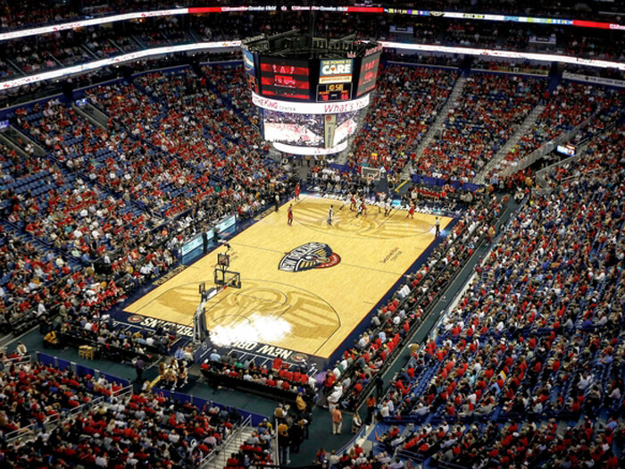
Dirección: 4 Pennsylvania Plaza, Nueva York (Nueva York) 10001
Capacidad (baloncesto): 19.812 espectadores
Inauguración: domingo, 11 de febrero de 1968
Anterior cancha del equipo: Madison Square Garden (III)
Arquitecto: Charles Luckman Associates
Coste de construcción: 123 millones de dólares (En fecha de construcción. No incluye renovaciones)
Propiedad: Privada
Propietario: MSG Entertainment
Gestor: MSG Entertainment
Otros equipos de los que es sede: New York Rangers (NHL), St. John's Red Storm (NCAA)
Página web oficial: https://www.thegarden.com/
Paycom Cente
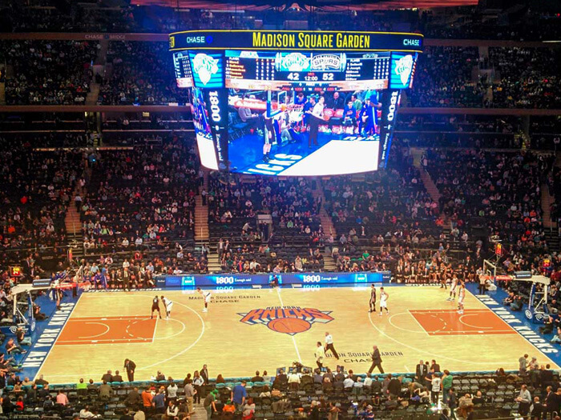
Dirección: 100 West Reno Avenue, Oklahoma City (Oklahoma) 73102
Capacidad (baloncesto): 18.203 espectadores
Inauguración: sábado, 8 de junio de 2002
Arquitecto: The Benham Companies, LLC
Coste de construcción: 89 millones de dólares (En fecha de construcción. No incluye renovaciones)
Propiedad: Pública
Propietario: City of Oklahoma City
Gestor: SMG
Página web oficial: https://www.paycomcenter.com